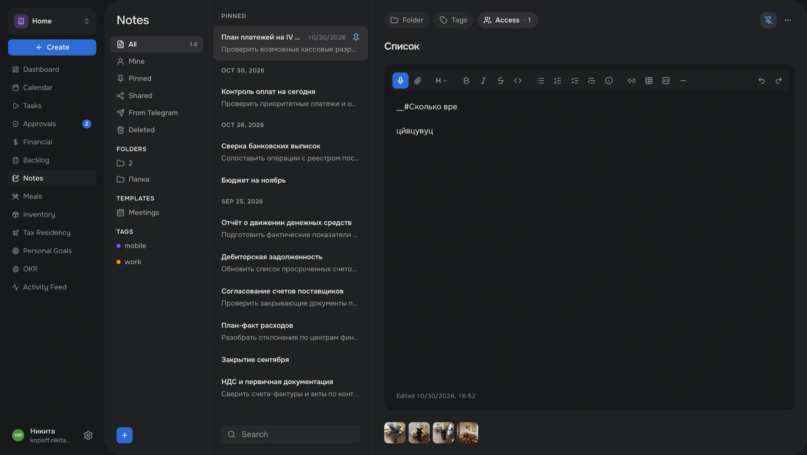

Переосмыслил UX UI и расширил функциональность консьерж-сервиса, используя AI вместо Figma
Мой вклад
Discovery, UX Audit, UX/UI Design, Design System, AI Prototyping, Design QA
2026
Мой вклад
Discovery, UX Audit, UX/UI Design, Design System, AI Prototyping, Design QA
2026
Проблема
Команда перестала справляться с растущим количеством проблем, и заказчик был недоволен качеством продукта. Поэтому к проекту решили привлечь дизайнера.
| Проблема | Раздел | Что было не так |
|---|---|---|
| Недостаток функциональности | Заметки | Пользователи вели заметки в сторонних сервисах, поскольку в платформе не было отдельного модуля для их хранения и редактирования. Рабочая информация оставалась за пределами платформы. |
| Разрозненность визуальных решений | Цвета | В интерфейсе накопилось множество оттенков и локальных исключений. Отсутствовали единая цветовая палитра и правила её применения. |
| Типографика | Использовались несогласованные размеры и начертания шрифтов. Отсутствовала единая типографическая система. |
Задача
Систематизировать визуальные принципы существующего продукта, устранить накопившиеся UX/UI-проблемы и дополнить платформу недостающими возможностями, сохранив её действующую архитектуру.
Discovery
Во время брифинга выяснил, какие функции необходимы сотрудникам в первую очередь. На основе бизнес-приоритетов заказчика определил последовательность работ: сначала четыре функциональных модуля, затем визуальный редизайн платформы.
| Приоритет | Раздел | Почему |
|---|---|---|
| 1 | Заметки | — |
| 2 | Модуль 2 | — |
| 3 | Модуль 3 | — |
| 4 | Модуль 4 | — |
| 5 | Визуальный редизайн | — |
На момент моего подключения платформа уже имела работающую функциональность и архитектуру. Над продуктом работали разработчики и продуктовый менеджер, но в команде не было дизайнера и готовых макетов в Figma. Поэтому весь процесс проектирования организовал через браузер и AI-инструменты.
| Этап | Как организовал работу |
|---|---|
| Требования | Формулировал функциональные требования и UX/UI-правила для новых и существующих разделов платформы. |
| Прототипирование | Создавал кликабельные прототипы через ChatGPT, не используя Figma. |
| Согласование | Демонстрировал решения в браузере, собирал обратную связь и вносил изменения непосредственно в прототипы. |
| Реализация | Передавал спецификации разработчикам, которые использовали Claude для внесения изменений в код. |
| Проверка | Тестировал реализованные решения на стейдже, выявлял несоответствия и передавал корректировки разработчикам. |
Заметки
Платформа разрабатывалась в формате digital concierge для конкретного заказчика и его ближайшего окружения. Для модуля заметок выделил две роли: заказчика и его личного ассистента.
| Роль | Jobs to Be Done |
|---|---|
| Заказчик | Когда мне нужно сохранить личную или деловую информацию, я хочу создать заметку, чтобы в любой момент вернуться к ней и при необходимости дополнить. |
| Когда задача требует дополнительных пояснений, я хочу прикрепить к ней заметку, чтобы вся необходимая информация находилась в одном месте. | |
| Личный ассистент | Когда мне нужно зафиксировать информацию для заказчика или собственные рабочие пометки, я хочу создать заметку, чтобы сохранить её и использовать в дальнейшей работе. |
| Когда я выполняю поручение заказчика, я хочу прикрепить к задаче заметку с дополнительными сведениями, чтобы сохранить контекст поручения. |
| AS-IS | TO-BE |
|---|---|
| Заказчик и его ассистент вели заметки в сторонних приложениях на компьютере и телефоне. | Заметки создаются и хранятся непосредственно в корпоративной платформе. |
| Дополнительную информацию к задачам приходилось размещать в небольшом текстовом поле или хранить отдельно. | Заметка становится самостоятельной сущностью, которую можно прикрепить к задаче. |
| Для работы с объёмными записями приходилось переключаться между приложениями. | Встроенный текстовый редактор позволяет работать с объёмными заметками и форматировать содержимое. |
| Самостоятельные заметки не имели отдельного пространства внутри платформы. | Появляется отдельный раздел с быстрым доступом к созданию, просмотру и редактированию заметок. |
На основе Jobs to Be Done определил требования к новому модулю. Заметки должны были стать самостоятельной сущностью с возможностью организации, редактирования и совместного использования, сохранив связь с задачами.
| Раздел | Требования |
|---|---|
| Структура интерфейса | Организовать рабочее пространство в три колонки: навигация по заметкам, список заметок и редактор выбранной записи. |
| Навигация | Предусмотреть категории: все заметки, мои, закреплённые, общие, из Telegram и удалённые. |
| Организация заметок | Добавить папки, теги и шаблоны для структурирования информации и быстрого доступа к ней. |
| Список заметок | Группировать заметки по датам, отображать заголовок и превью содержимого. Предусмотреть закрепление важных записей в верхней части списка. |
| Поиск и создание | Обеспечить быстрый поиск по заметкам и создание новых записей непосредственно из рабочего пространства. |
| Текстовый редактор | Предоставить возможность создавать и редактировать заметки разного объёма прямо внутри платформы, без перехода в сторонние приложения. |
| Форматирование | Поддержать заголовки, жирный, курсивный и зачёркнутый текст, списки разных типов, ссылки, таблицы, блоки кода и другие инструменты форматирования. |
| Управление доступом | Предусмотреть возможность предоставления доступа к заметке отдельным людям или целой команде. |
| Связь с задачами | Позволить прикреплять заметки к задачам, сохраняя возможность использовать их как самостоятельные документы. |
| Вложения | Обеспечить прикрепление файлов и изображений непосредственно к заметке, независимо от её связи с задачами. |
| Управление заметкой | Добавить назначение папки и тегов, закрепление заметки, удаление через меню дополнительных действий и отображение времени последнего редактирования. |
| Раздел | Ограничения / вводные | UX-решение |
|---|---|---|
| 1. Навигация и фильтры | Предполагалось небольшое количество папок и тегов. | Разместил категории, папки и теги в постоянно открытой боковой панели для быстрого доступа к нужным заметкам. |
| 2. Список заметок | Заметок предполагалось немного, при этом они быстро теряли актуальность. | Разместил хронологический список рядом с редактором, предусмотрев закрепление важных записей и переключение между ними без дополнительных переходов. |
| 3. Редактор заметки | Длинные строки усложняют чтение объёмных документов, а переходы на отдельную страницу создают лишние действия. | Ограничил ширину текстовой области до 700–800 px и предусмотрел редактирование заметки непосредственно рядом со списком. |
С помощью ChatGPT собрал кликабельный прототип для демонстрации заказчику. На его основе реализовали и запустили модуль заметок.

Оба участника положительно оценили трёхколоночную структуру: навигация, список заметок и редактор доступны на одном экране, поэтому не нужно переходить между страницами. Замечаний к компоновке по итогам тестирования не возникло.
Откройте сайт на компьютере — так макеты сохранят все детали.